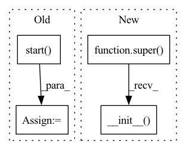

Pattern ID :2358

Before Change
"model_analyzer.triton.server.server_docker.docker",
Mock(**docker_attrs))
self.mock = self.patcher_docker.start()
def stop(self):
Destroy the mocked classes and
After Change
self.patcher_docker = patch(
"model_analyzer.triton.server.server_docker.docker",
Mock(**docker_attrs))
super().__init__()
def start(self):
Start the patchers
In pattern: SUPERPATTERN
Frequency: 4
Non-data size: 4
Instances
Fragment ID: 9987128
Project Name: triton-inference-server/model_analyzer
Commit Name: 22ba2be3f08875104a4b5b8b4c4a9bb556023dde
Time: 2021-01-15
Author: asramesh@nvidia.com
File Name: tests/mocks/mock_server_docker.py
M Class Name: MockServerDockerMethods
N Class Name: MockServerDockerMethods
M Method Name: __init__(1)
N Method Name: __init__(1)
M Parent Class: MockServerMethods
N Parent Class: MockServerMethods
M File Name: tests/mocks/mock_server_docker.py
N File Name: tests/mocks/mock_server_docker.py
M Start Line: 42
M End Line: 46
N Start Line: 45
N End Line: 45
'>
Before Change
"model_analyzer.triton.server.server_local.PIPE", MagicMock())
self.popen_mock = self.patcher_popen.start()
self.stdout_mock = self.patcher_stdout.start()
self.pipe_mock = self.patcher_pipe.start()
def stop(self):
Destroy the mocked classes and
After Change
"model_analyzer.triton.server.server_local.STDOUT", MagicMock())
self.patcher_pipe = patch(
"model_analyzer.triton.server.server_local.PIPE", MagicMock())
super().__init__()
def start(self):
Start the patchers
'>
Fragment ID: 9987129
Project Name: triton-inference-server/model_analyzer
Commit Name: 22ba2be3f08875104a4b5b8b4c4a9bb556023dde
Time: 2021-01-15
Author: asramesh@nvidia.com
File Name: tests/mocks/mock_server_local.py
M Class Name: MockServerLocalMethods
N Class Name: MockServerLocalMethods
M Method Name: __init__(1)
N Method Name: __init__(1)
M Parent Class: MockServerMethods
N Parent Class: MockServerMethods
M File Name: tests/mocks/mock_server_local.py
N File Name: tests/mocks/mock_server_local.py
M Start Line: 31
M End Line: 40
N Start Line: 38
N End Line: 38
'>
Before Change
MockCalledProcessError)
self.check_output_mock = self.patcher_check_output.start()
self.stdout_mock = self.patcher_stdout.start()
self.called_process_error_mock = self.patcher_called_process_error.start(
)
def stop(self):
Destroy the mocked classes and
After Change
self.patcher_called_process_error = patch(
"model_analyzer.perf_analyzer.perf_analyzer.CalledProcessError",
MockCalledProcessError)
super().__init__()
def start(self):
Start the patchers
'>
Fragment ID: 9987130
Project Name: triton-inference-server/model_analyzer
Commit Name: 22ba2be3f08875104a4b5b8b4c4a9bb556023dde
Time: 2021-01-15
Author: asramesh@nvidia.com
File Name: tests/mocks/mock_perf_analyzer.py
M Class Name: MockPerfAnalyzerMethods
N Class Name: MockPerfAnalyzerMethods
M Method Name: __init__(1)
N Method Name: __init__(1)
M Parent Class: MockBase
N Parent Class:
M File Name: tests/mocks/mock_perf_analyzer.py
N File Name: tests/mocks/mock_perf_analyzer.py
M Start Line: 38
M End Line: 48
N Start Line: 45
N End Line: 45
'>
Before Change
self.patcher_grpc_client = patch(
"model_analyzer.triton.client.grpc_client.grpcclient.InferenceServerClient",
Mock(return_value=mock_grpc_client))
self.http_mock = self.patcher_http_client.start()
self.grpc_mock = self.patcher_grpc_client.start()
def stop(self):
After Change
self.patcher_grpc_client = patch(
"model_analyzer.triton.client.grpc_client.grpcclient.InferenceServerClient",
Mock(return_value=mock_grpc_client))
super().__init__()
def start(self):
start the patchers
'>
Fragment ID: 9987133
Project Name: triton-inference-server/model_analyzer
Commit Name: 22ba2be3f08875104a4b5b8b4c4a9bb556023dde
Time: 2021-01-15
Author: asramesh@nvidia.com
File Name: tests/mocks/mock_client.py
M Class Name: MockTritonClientMethods
N Class Name: MockTritonClientMethods
M Method Name: __init__(1)
N Method Name: __init__(1)
M Parent Class: MockBase
N Parent Class:
M File Name: tests/mocks/mock_client.py
N File Name: tests/mocks/mock_client.py
M Start Line: 36
M End Line: 43
N Start Line: 43
N End Line: 43